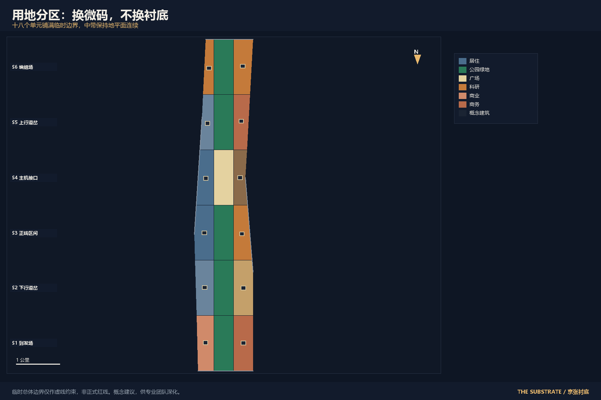
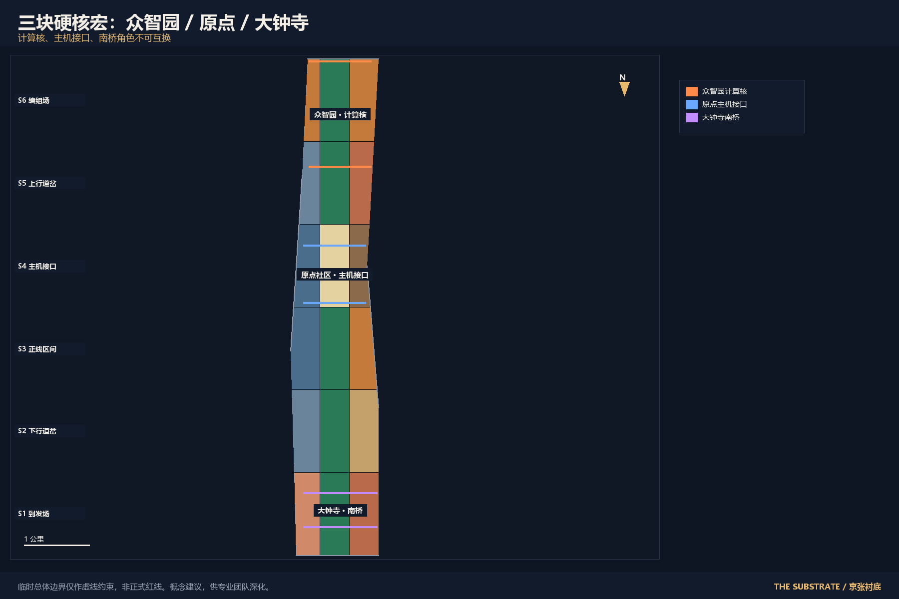
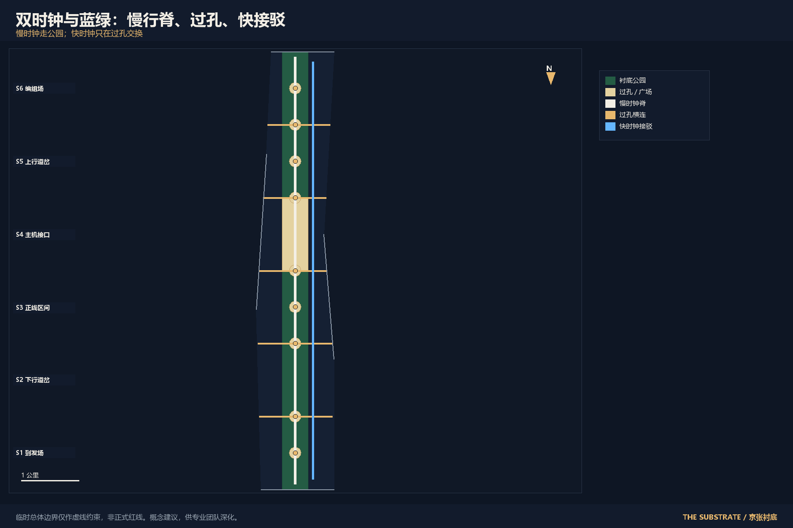
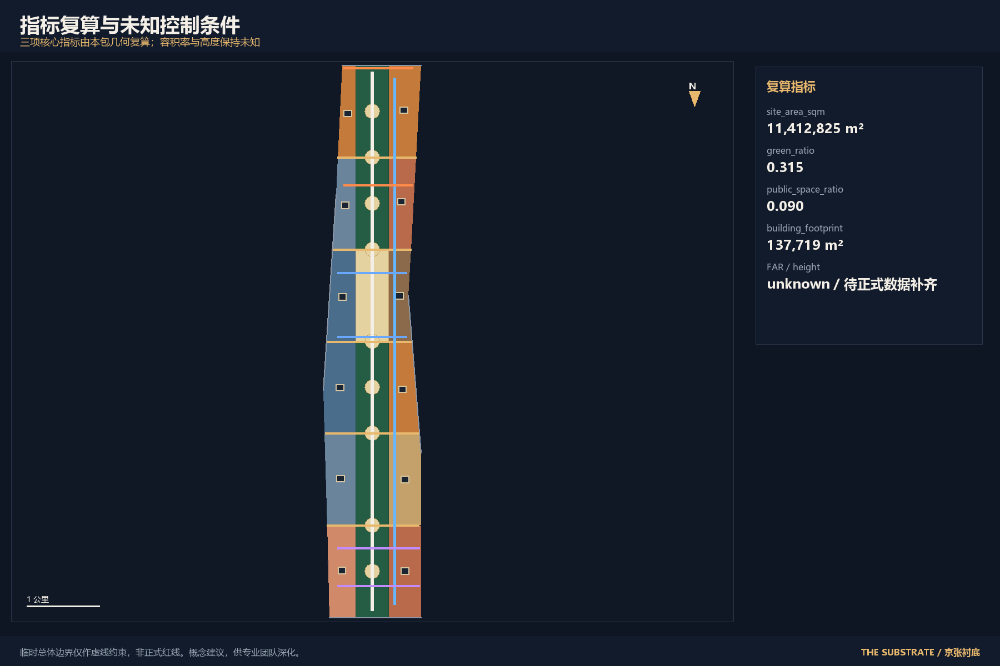

京张衬底 / THE SUBSTRATE
把已建成的京张遗址公园当作芯片衬底，用巴西利亚式可读总图组织六段三带，用雅各布斯式地面保证过孔有人、短边可穿；AI 只作为可关闭的用户态微码。
京张衬底 / THE SUBSTRATE
设计依据与资料清单
本方案的第一依据是海淀分局《百年京张AI创新带城市设计国际方案征集资格预审公告》。它给出三层范围的文字四至、约面积、三处重点区和设计深度，但没有给出可用于审批的官方红线 来源。面向智能体任务书补上三大定位、五大功能、三区两翼和 agent.1 至 agent.6，并把全部空间动作限制为概念建议 来源。
场地包里的临时多边形只用于生成、展示和自检。提交边界与三处重点区都标成临时约束，不能当成官方红线或精确面积依据 空间数据。正式数据发布后，边界、用地、道路、绿地、公共空间、建筑、分期和指标必须整包重算，而不是改一个文件。
公开来源登记把资料分成正式可用、仅背景和仅临时。本方案用公告、任务书、城市设计管理办法、控规编制办法、用地分类指南和无障碍环境建设法支撑正式判断；巴西利亚总图和雅各布斯街道生活只作为机制阅读，不升级成法定依据 来源。容积率、建筑高度、权属和市政容量在公开包中不存在，正文写成待正式数据补齐，不填成看起来完整的数字 标准。

识别系统用一枚矩形衬底和一排过孔。中文名「京张衬底」，英文名 THE SUBSTRATE。标志方向是深底、一条连续地平面、六个可关断的试验段，不使用未授权字体、商标或肖像。
三层范围工作框架
统筹研究范围约 43.6 平方公里，北至北五环、东至京藏高速、南至西直门外大街、西至万泉河路。这一层只回答网络问题：电流从哪进来、结果送到哪。本方案不给这一层画多边形，避免把文字四至伪装成红线 深度。
总体设计范围约 11.4 平方公里，是本包提交的临时边界。公告描述为遗址公园周边一至两公里的城市和产业地区。本方案在这张临时版图上做 floorplan：六段、三带、十二个过孔。由几何复算的场地面积只是设计模型值，置信度为中等 指标。
重点详细设计合计约 368.4 公顷，自北向南是众智园、原点社区、大钟寺。三处多边形同样是临时矩形，边线不能读成地块或道路红线 空间数据。正式多边形到达后，三处硬核宏的位置可以平移，但计算核、主机接口、南桥的角色关系保持不变。

三层之间的传递必须可核对。统筹层给出回路，总体层给出总线和标准单元，重点层给出封装引脚。缺官方几何时，传递写在用地单元的段号上，而不是写在假装精确的坐标里。
统筹研究范围产业与未来城市研究
三大定位叠在同一条线上：百年京张文化带是衬底本身，都市 AI 生活体验带发生在过孔和标准单元内部，AI 融合创新带由两翼注入 来源。五大功能不平均摊铺：全栈自主和全球话语放在北端编组场，世界级创新生态放在主机接口，场景赋能沿全线并在下行道岔集中，活力城市放在南端到发场，治理规则就是令牌与四道门。
三区两翼做成闭合回路，而不是邻接示意图。研究能力从原点校园边进入，在众智园硬化成标准和评测，沿正线按预约试验，在大钟寺转成产品和对外接口，再由中关村科技服务翼和小月河场景赋能翼送回资本、专业服务和真实需求。这是创新系统，不是创新标签。
全球案例只读机制，不抄形象。巴西利亚证明可读总图可以一次看懂结构，也证明清空地面会把生活赶到卫星城。雅各布斯证明短边、混用和街上的眼睛才是电流。新加坡 one-north 说明研究园区仍要保留可走的地面层。巴塞罗那 22@ 说明产业更新应改程序、不换街区骨架。赫尔辛基卡拉萨塔马说明试验必须可退出。宋道新城说明“全智能、无人”会变成空城。中关村西区说明专业服务翼已经存在，不必再造一座新城。Station F 说明接口是可预约的房间，不是雕塑。
这些案例转化为本方案的三条规则：总图可以像巴西利亚一样可读；地面必须像雅各布斯一样可走；试验必须像测试端口一样可关断。产业空间因此分成不可改写的衬底、可替换的微码、和必须人工值守的过孔 标准。
总体设计范围城市更新与控规深度城市设计
总体结构是六段三带。自南向北：到发场、下行道岔、正线区间、主机接口、上行道岔、编组场。东西三带分别是生活带、衬底带、程序带。每个用地单元携带段号，评审可以从地块回到结构角色 空间数据。
城市更新的对象不是再画一条纪念大道，而是修补已经存在的大院和断点。现状判断只能写到公开资料允许的深度：遗址公园二期已作为公共参照系开放，场地内仍有大量互不连通的超大街块。本方案把超过短边可穿尺度的封闭院落当作布线故障，建议补一条公共穿行和一个可停留的地面层，不把产权封闭写成已证实事实 深度。
控规深度在这里表现为结构、用途分区、公共空间网络和待确认控制条件清单，而不是伪造容积率分区图。建筑高度、开发强度、道路红线宽度保持未知。可以保留由本包几何复算的概念体量，但它们不等于法定控制值 深度。
京张遗址公园活力带是地平面，不是待建走廊。东西缝合只发生在过孔，南北贯通走衬底慢时钟脊。风貌控制用一条连续的深色地平面和过孔的浅色房间来识别，不靠未清权的网红装置。
重点区域详细设计
众智园是计算核。它承担全栈试验和评测，但公共地面仍要能在模型关闭后走完。建议把试验密度放在东程序带，把可退出的公共房间放在过孔，把生活服务留在西带。拆改留在此只能写成概念分类：既有公共通道优先保留，试验构件必须可撤除，新建体量不得切断衬底 空间数据。一段公共空间同时只发一枚试验令牌，未归还前不发下一枚。
原点社区是主机接口。高校、居住和日常服务在这里会合，默认路径是无账号的日常轨。建议把教育科研放在东带，居住和社区服务放在西带，中央用广场而不是停车场来做接口 空间数据。AI 窗口排在人工窗口之后，退出回执必须还在。这里的朝圣地标是“换向点”，纪念的是詹天佑的人字形折返，不是一座新塔。
大钟寺是南桥。市场、产业和对外接口在此落地。建议把智能原生消费写成可关闭的摊位和厅，而不是全时监控的商业综合体 空间数据。货运和低速配送走快时钟接驳概念线，不进入衬底慢行脊。临时矩形不代表大钟寺的真实四至，正式数据到达后整区重绑。

三处详细设计共用同一套 DRC：不断开地平面，无过孔不贴地切开，未知控制条件保持未知。它们是不可互换的硬核宏，不能把众智园的试验协议复制到原点的日常轨上 深度。
AI 创新生态、人才画像与 AI+ 场景
六类画像覆盖居民、学生、研究者、小微商户、市政巡查员和带小孩的访客。方案不为“高端用户”单独做一套城市。每张场景卡都要写服务对象、空间位置、运行数据、隐私边界、人工复核、运营主体和关闭后的等价路径 标准。
S01 过孔问询：在十二个过孔提供多通道导览，关闭后留下印好的地图和值守人员。S02 无账号就医导航：把就诊路径投到原点社区公共屏，不收集身份证号。S03 校园到公园慢行：用慢时钟脊连接教育用地和衬底，不新增汽车捷径。S04 小微商户令牌：大钟寺试验摊位按半日令牌开放，归还后才发下一枚。S05 低速配送绕行：配送只走快时钟接驳线，进入生活带必须降速并允许人工拦停。S06 文化导览：沿线只讲已登记的公开史实，不生成未核验的名人故事。S07 公共学习桌：人工窗口、信息位、AI 开关、退出回执四位不可调换。S08 安全复核：巡查员可否决贴近出入口的可撤除构件，无需说明理由。S09 企业合规副驾驶：只整理公开规则，不读取企业未公开的经营记录。S10 雨水与静音替代：为回避噪声和强光的人提供并行慢路径。S11 开发者预约轨：众智园试验段按令牌开放，失败则停。S12 无数据等价服务：任何要求上传个人数据的服务，必须同时提供不上传也能完成的窗口。
其中 S04、S11、S12 是产业测试验证场景。它们检验的是准入、隔离和退出，而不是自动化率。数据原则上在端侧或当场销毁，人工复核先于模型输出。
用地、建筑规模与拆改留方案
用地按六段三带划分，十八个单元铺满提交边界，不留未标注空隙 空间数据。中带以公园和广场为主，保证地平面连续；西带以居住和社区服务为主，保证街上有眼睛；东带以科研、教育和商务为主，保证程序可替换。绿地率和公共空间率由本包几何复算，属于低置信度设计模型值 指标。
建筑基底是落在西带和东带内部的概念体量，用来标示“程序放在哪”，不是现状普查，也不是批准建设规模 指标。容积率和建筑高度保持未知，因为公开包没有控规图则 指标。
拆改留只能写原则。保留：已开放的公园连续面、可确认的公共通道、文保和水系相关的未知控制，在正式数据到来前不得改写。改造：过孔处的地面层，使其可停留、可关闭、可回退。拆除：仅针对可撤除的试验构件，不针对权属未明的建筑。新建：只允许不切断衬底的概念补丁。任何具体地块结论都待正式权属和控规补齐 深度。容积率和高度在此保持待正式数据补齐，不把概念体量写成强度分区 深度。
交通、轨道、市政与公共服务设施
交通分成两个时钟域。慢时钟是步行、骑行和停留，走衬底脊和过孔横连。快时钟是轨道接驳、公交和低速配送的概念线，贴在东侧，不新开一条把生活切开的地面快速路 空间数据。二者只在过孔交换。巴西利亚纪念轴几乎没有过孔，所以照片好看、街上没人；京张的过孔必须有人值守。
轨道站点一体化写成接驳房间，而不是新线位。本方案不画轨道线形，也不做桥隧可行性。市政和新型基础设施同样保持未知容量：端侧算力、数据要素和令牌账本只作为服务协议，不作为变电站或管线工程。公共服务的最小载体是万感服务桌：人工窗口在前，AI 开关在后，退出回执始终在场。慢行连续和无障碍通行优先于任何试验构件 标准 深度。

停车和非机动车组织只给原则：过孔优先给人，车辆停在单元外侧概念位，具体泊位待交通详规。对外交通通过南桥大钟寺和北端五环侧的概念接口完成，不改快速路红线。
蓝绿空间、公共空间与城市风貌
蓝绿系统的主脊是中带衬底。它把公园绿地连成一条可独立走完的地平面，清河与小月河只在公开资料允许的范围内被当作侧向蓝带线索，不编造蓝线 空间数据。公共空间是过孔房间和主机接口广场，用来让人停留、问询、退出 空间数据 指标 深度。
三处朝圣地标分别是：南端到发场的“归还令牌”亭，原点社区的“人字换向”地面标记，北端编组场的“可关闭试验”门。它们纪念的是操作，不是偶像。荣誉展示体系沿衬底布置可更换的贡献板，写下 GitHub 名称和日期，不写未发生的政绩。公共空间组件库只有五件：服务桌、过孔灯、可撤除试验围栏、印好地图、退出回执箱。全部可人工拆走。
风貌用深色连续地面和浅色过孔来识别。屋顶、体量和色彩在控规未到前不写死 深度。科技测试场景必须让位于步行连续；不能把公园改成展厅。智能原生业态可以出现在大钟寺和过孔，但必须能在一枚令牌周期内撤场。市政容量、端侧算力和管线工程同样保持待正式数据补齐，本方案只给服务协议，不给工程可行性 深度。
更新项目清单、实施政策与分期计划
六个概念工作包对应四道证据门。JZ-01 过孔原型：先做三处有人值守的公共房间。JZ-02 慢时钟脊补段：只补已经断开的步行连续。JZ-03 原点服务桌：验证四位不可调换。JZ-04 众智园令牌轨：验证一枚令牌一个区间。JZ-05 大钟寺无数据窗口：验证不上传也能完成服务。JZ-06 贡献板与年度问询：把纪念做成可更新的公共记录 空间数据。
分期是 G0 证据零阶段、G1 过孔缝合、G2 三核接口、G3 全带复核。未通过上一道门，不进入下一道。实施主体写成“专业团队 + 在地使用者 + 维护者复核”，不写成已确定的政府安排。政策建议只有两条：公开几何到达后整包重算；任何要求个人数据的服务必须保留无数据等价窗口 深度 深度。
年度活动体系建议四场：春季过孔开放日、夏季无账号走完、秋季令牌归还、冬季标准复读。开发者社区运营通过公开仓库、Issue 和可复现试验段进行。招引转化只提供已提交、已评审、已入选、已实施四词，不把本包写成已实施。国际传播的单句主张是：rewrite the metal, keep the die.
指标体系、面积复算与合规矩阵
三项核心视觉指标均可从本包几何复算：场地面积、绿地率、公共空间率。它们是临时设计模型值，不是法定面积 指标。建筑基底面积同样由概念体量相加得到，只说明程序放在哪。容积率和高度保持未知。
可计数但不构成成绩的指标包括：用地单元十八个、过孔十二个、场景卡十二张、画像六类、地标三处、工作包六个、段六条、门四道 指标。任务覆盖、专业标准和设计深度分别写在三份矩阵里。公告 1.3、1.4、1.5 与 agent.1 至 agent.6 都挂到了章节、图层、指标和展板，但不在正文重复机器索引。

指标的设计含义是：绿地率衡量地平面有没有被程序吃掉；公共空间率衡量过孔是否真的存在；未知的容积率衡量方案有没有诚实。用自动化率定义先进程度，会被本方案自己的命题否定。复算过程、公式和置信度写在指标文件里，正文只解释含义 深度。
风险、版权与合规说明
主要风险是把临时边界当成红线、把概念体量当成批准建设、把 AI 场景当成已运营服务。本方案用临时标记、未知指标和 G0 门来挡住这三条路。隐私风险用无数据等价服务和禁止采集身份证号来挡。文保、蓝线和道路红线在正式数据到达前不改写。现状诊断只能写到公开资料允许的深度，缺官方普查不等于可以补一张假装完整的现状图 来源 深度 深度。
版权声明见阅读版附件。生成图件、展板和电子页均为概念示意图，画面内按概念建议理解，不冒充现场照片或官方图纸。背景文献只读机制，不复制原图。未使用第三方商标、肖像或未清权字体。visual 页面离线运行，不加载远程资源。全部空间落地建议都是概念建议、参考方案，供专业团队深化，不替代正式规划，不构成政府审定结论。
参考资料
北京市规划和自然资源委员会海淀分局，《百年京张AI创新带城市设计国际方案征集资格预审公告》，2026 来源。面向全球智能体的开源征集任务书摘录，2026 来源。场地包、公开来源登记和阅读导航层用于区分正式可用、仅背景和仅临时材料 来源 来源。住房和城乡建设部《城市设计管理办法》《城市、镇控制性详细规划编制审批办法》，以及自然资源部用地分类指南快照，用于约束深度和未知控制条件。无障碍环境建设法快照用于约束慢行连续。卢西奥·科斯塔巴西利亚飞机总图、简·雅各布斯《美国大城市的死与生》只作为机制阅读，不升级为法定依据。仓库内临时边界仅用于生成和自检，正式多边形发布后整包重算。